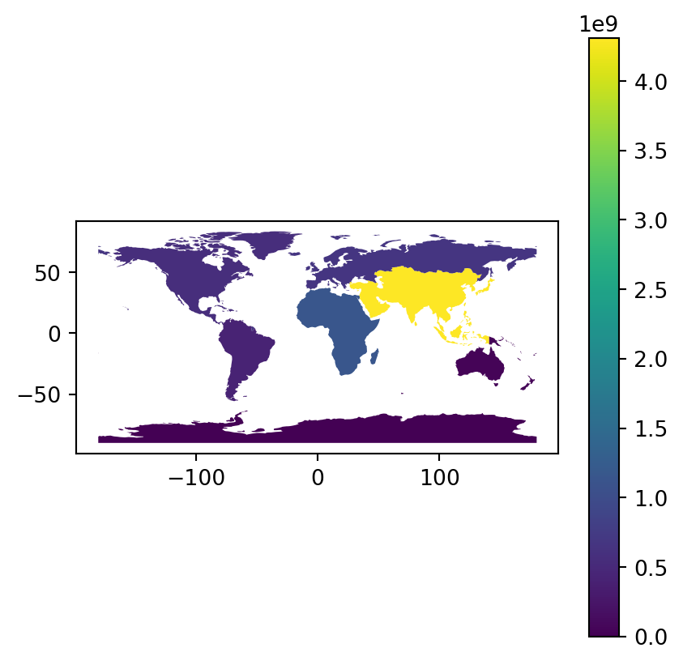
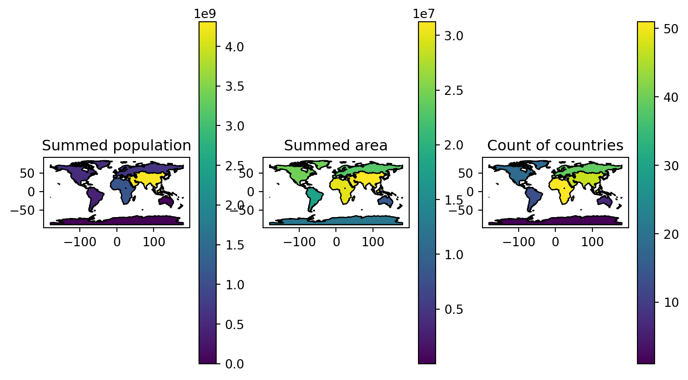
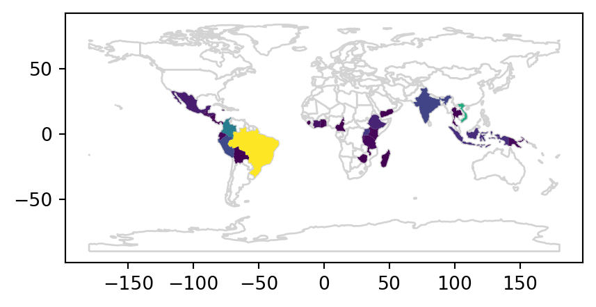
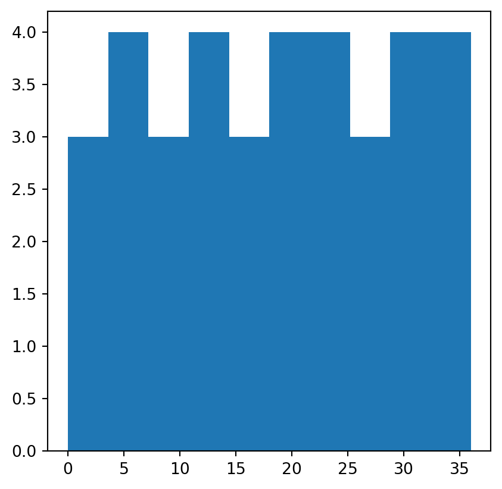

import numpy as np
import pandas as pd
import matplotlib.pyplot as plt
import geopandas as gpd
import rasterio2 Attribute data operations
2.1 Prerequisites
Packages…
Sample data…
Attempting to get the dataworld = gpd.read_file('data/world.gpkg')
src_elev = rasterio.open('data/elev.tif')
src_multi_rast = rasterio.open('data/landsat.tif')2.2 Introduction
Attribute data is non-spatial information associated with geographic (geometry) data. A bus stop provides a simple example: its position would typically be represented by latitude and longitude coordinates (geometry data), in addition to its name. The Elephant & Castle / New Kent Road stop in London, for example has coordinates of -0.098 degrees longitude and 51.495 degrees latitude which can be represented as POINT (-0.098 51.495) in the Simple Feature representation described in Chapter 1. Attributes such as the name attribute of the POINT feature (to use Simple Features terminology) are the topic of this chapter.
Another example is the elevation value (attribute) for a specific grid cell in raster data. Unlike the vector data model, the raster data model stores the coordinate of the grid cell indirectly, meaning the distinction between attribute and spatial information is less clear. To illustrate the point, think of a pixel in the 3rd row and the 4th column of a raster matrix. Its spatial location is defined by its index in the matrix: move from the origin four cells in the x direction (typically east and right on maps) and three cells in the y direction (typically south and down). The raster’s resolution defines the distance for each x- and y-step which is specified in a header. The header is a vital component of raster datasets which specifies how pixels relate to geographic coordinates (see also Chapter @spatial-operations).
This chapter teaches how to manipulate geographic objects based on attributes such as the names of bus stops in a vector dataset and elevations of pixels in a raster dataset. For vector data, this means techniques such as subsetting and aggregation (see Section 2.3.1 and Section 2.3.2). Section 2.3.3 and Section 2.3.4 demonstrate how to join data onto simple feature objects using a shared ID and how to create new variables, respectively. Each of these operations has a spatial equivalent: [ operator for subsetting a (Geo)DataFrame using a boolean Series, for example, is applicable both for subsetting objects based on their attribute and spatial relations derived using methods such as .intersects; you can also join attributes in two geographic datasets using spatial joins. This is good news: skills developed in this chapter are cross-transferable. Chapter 3 extends the methods presented here to the spatial world.
After a deep dive into various types of vector attribute operations in the next section, raster attribute data operations are covered in Section 2.4, which demonstrates how to create raster layers containing continuous and categorical attributes and extracting cell values from one or more layer (raster subsetting). Section 2.4.2 provides an overview of ‘global’ raster operations which can be used to summarize entire raster datasets.
2.3 Vector attribute manipulation
As mentioned in Section 1.2.2, vector layers (GeoDataFrame, from package geopandas) are basically extended tables (DataFrame from package pandas), the difference being that a vector layer has a geometry column. Since GeoDataFrame extends DataFrame, all ordinary table-related operations from package pandas are supported for vector layers as well, as shown below.
2.3.1 Vector attribute subsetting
pandas supports several subsetting interfaces, though the most recommended ones are:
.loc, which uses pandas indices, and.iloc, which uses (implicit) numpy-style numeric indices.
In both cases the method is followed by square brackets, and two indices, separated by a comma. Each index can comprise:
- A specific value, as in
1 - A slice, as in
0:3 - A
list, as in[0,2,4] :—indicating “all” indices
An exception to this rule is selecting columns using a list, as in df[['a','b']], instead of df.loc[:, ['a','b']], to select columns 'a' and 'b' from df.
Here are few examples of subsetting the GeoDataFrame of world countries.
Subsetting rows by position, e.g., the first three rows:
world.iloc[0:3, :]| iso_a2 | name_long | continent | ... | lifeExp | gdpPercap | geometry | |
|---|---|---|---|---|---|---|---|
| 0 | FJ | Fiji | Oceania | ... | 69.960 | 8222.253784 | MULTIPOLYGON (((-180.00000 -16.... |
| 1 | TZ | Tanzania | Africa | ... | 64.163 | 2402.099404 | MULTIPOLYGON (((33.90371 -0.950... |
| 2 | EH | Western Sahara | Africa | ... | NaN | NaN | MULTIPOLYGON (((-8.66559 27.656... |
3 rows × 11 columns
which is equivalent to:
world.iloc[:3]| iso_a2 | name_long | continent | ... | lifeExp | gdpPercap | geometry | |
|---|---|---|---|---|---|---|---|
| 0 | FJ | Fiji | Oceania | ... | 69.960 | 8222.253784 | MULTIPOLYGON (((-180.00000 -16.... |
| 1 | TZ | Tanzania | Africa | ... | 64.163 | 2402.099404 | MULTIPOLYGON (((33.90371 -0.950... |
| 2 | EH | Western Sahara | Africa | ... | NaN | NaN | MULTIPOLYGON (((-8.66559 27.656... |
3 rows × 11 columns
as well as:
world.head(3)| iso_a2 | name_long | continent | ... | lifeExp | gdpPercap | geometry | |
|---|---|---|---|---|---|---|---|
| 0 | FJ | Fiji | Oceania | ... | 69.960 | 8222.253784 | MULTIPOLYGON (((-180.00000 -16.... |
| 1 | TZ | Tanzania | Africa | ... | 64.163 | 2402.099404 | MULTIPOLYGON (((33.90371 -0.950... |
| 2 | EH | Western Sahara | Africa | ... | NaN | NaN | MULTIPOLYGON (((-8.66559 27.656... |
3 rows × 11 columns
Subsetting columns by position, e.g., the first three columns:
world.iloc[:, 0:3]| iso_a2 | name_long | continent | |
|---|---|---|---|
| 0 | FJ | Fiji | Oceania |
| 1 | TZ | Tanzania | Africa |
| 2 | EH | Western Sahara | Africa |
| ... | ... | ... | ... |
| 174 | XK | Kosovo | Europe |
| 175 | TT | Trinidad and Tobago | North America |
| 176 | SS | South Sudan | Africa |
177 rows × 3 columns
Subsetting rows and columns by position:
world.iloc[0:3, 0:3]| iso_a2 | name_long | continent | |
|---|---|---|---|
| 0 | FJ | Fiji | Oceania |
| 1 | TZ | Tanzania | Africa |
| 2 | EH | Western Sahara | Africa |
Subsetting columns by name:
world[['name_long', 'geometry']]| name_long | geometry | |
|---|---|---|
| 0 | Fiji | MULTIPOLYGON (((-180.00000 -16.... |
| 1 | Tanzania | MULTIPOLYGON (((33.90371 -0.950... |
| 2 | Western Sahara | MULTIPOLYGON (((-8.66559 27.656... |
| ... | ... | ... |
| 174 | Kosovo | MULTIPOLYGON (((20.59025 41.855... |
| 175 | Trinidad and Tobago | MULTIPOLYGON (((-61.68000 10.76... |
| 176 | South Sudan | MULTIPOLYGON (((30.83385 3.5091... |
177 rows × 2 columns
“Slice” of columns between given ones:
world.loc[:, 'name_long':'pop']| name_long | continent | region_un | ... | type | area_km2 | pop | |
|---|---|---|---|---|---|---|---|
| 0 | Fiji | Oceania | Oceania | ... | Sovereign country | 19289.970733 | 885806.0 |
| 1 | Tanzania | Africa | Africa | ... | Sovereign country | 932745.792357 | 52234869.0 |
| 2 | Western Sahara | Africa | Africa | ... | Indeterminate | 96270.601041 | NaN |
| ... | ... | ... | ... | ... | ... | ... | ... |
| 174 | Kosovo | Europe | Europe | ... | Sovereign country | 11230.261672 | 1821800.0 |
| 175 | Trinidad and Tobago | North America | Americas | ... | Sovereign country | 7737.809855 | 1354493.0 |
| 176 | South Sudan | Africa | Africa | ... | Sovereign country | 624909.099086 | 11530971.0 |
177 rows × 7 columns
Subsetting by a list of boolean values (0 and 1 or True and False):
x = [1, 1, 0, 0, 0, 0, 0, 1, 1, 0, 0]
world.iloc[:, x]| name_long | name_long | iso_a2 | ... | name_long | iso_a2 | iso_a2 | |
|---|---|---|---|---|---|---|---|
| 0 | Fiji | Fiji | FJ | ... | Fiji | FJ | FJ |
| 1 | Tanzania | Tanzania | TZ | ... | Tanzania | TZ | TZ |
| 2 | Western Sahara | Western Sahara | EH | ... | Western Sahara | EH | EH |
| ... | ... | ... | ... | ... | ... | ... | ... |
| 174 | Kosovo | Kosovo | XK | ... | Kosovo | XK | XK |
| 175 | Trinidad and Tobago | Trinidad and Tobago | TT | ... | Trinidad and Tobago | TT | TT |
| 176 | South Sudan | South Sudan | SS | ... | South Sudan | SS | SS |
177 rows × 11 columns
We can remove specific rows by id using the .drop method, e.g., dropping rows 2, 3, and 5:
world.drop([2, 3, 5])| iso_a2 | name_long | continent | ... | lifeExp | gdpPercap | geometry | |
|---|---|---|---|---|---|---|---|
| 0 | FJ | Fiji | Oceania | ... | 69.960000 | 8222.253784 | MULTIPOLYGON (((-180.00000 -16.... |
| 1 | TZ | Tanzania | Africa | ... | 64.163000 | 2402.099404 | MULTIPOLYGON (((33.90371 -0.950... |
| 4 | US | United States | North America | ... | 78.841463 | 51921.984639 | MULTIPOLYGON (((-171.73166 63.7... |
| ... | ... | ... | ... | ... | ... | ... | ... |
| 174 | XK | Kosovo | Europe | ... | 71.097561 | 8698.291559 | MULTIPOLYGON (((20.59025 41.855... |
| 175 | TT | Trinidad and Tobago | North America | ... | 70.426000 | 31181.821196 | MULTIPOLYGON (((-61.68000 10.76... |
| 176 | SS | South Sudan | Africa | ... | 55.817000 | 1935.879400 | MULTIPOLYGON (((30.83385 3.5091... |
174 rows × 11 columns
Or remove specific columns using the .drop method and axis=1 (i.e., columns):
world.drop(['name_long', 'continent'], axis=1)| iso_a2 | region_un | subregion | ... | lifeExp | gdpPercap | geometry | |
|---|---|---|---|---|---|---|---|
| 0 | FJ | Oceania | Melanesia | ... | 69.960000 | 8222.253784 | MULTIPOLYGON (((-180.00000 -16.... |
| 1 | TZ | Africa | Eastern Africa | ... | 64.163000 | 2402.099404 | MULTIPOLYGON (((33.90371 -0.950... |
| 2 | EH | Africa | Northern Africa | ... | NaN | NaN | MULTIPOLYGON (((-8.66559 27.656... |
| ... | ... | ... | ... | ... | ... | ... | ... |
| 174 | XK | Europe | Southern Europe | ... | 71.097561 | 8698.291559 | MULTIPOLYGON (((20.59025 41.855... |
| 175 | TT | Americas | Caribbean | ... | 70.426000 | 31181.821196 | MULTIPOLYGON (((-61.68000 10.76... |
| 176 | SS | Africa | Eastern Africa | ... | 55.817000 | 1935.879400 | MULTIPOLYGON (((30.83385 3.5091... |
177 rows × 9 columns
We can rename columns using the .rename method:
world[['name_long', 'pop']].rename(columns={'pop': 'population'})| name_long | population | |
|---|---|---|
| 0 | Fiji | 885806.0 |
| 1 | Tanzania | 52234869.0 |
| 2 | Western Sahara | NaN |
| ... | ... | ... |
| 174 | Kosovo | 1821800.0 |
| 175 | Trinidad and Tobago | 1354493.0 |
| 176 | South Sudan | 11530971.0 |
177 rows × 2 columns
The standard numpy comparison operators can be used in boolean subsetting, as illustrated in Table Table 2.1.
Symbol |
Name |
|---|---|
== |
Equal to |
!= |
Not equal to |
>, < |
Greater/Less than |
>=, <= |
Greater/Less than or equal |
&, |, ~ |
Logical operators: And, Or, Not |
The following example demonstrates logical vectors for subsetting by creating a new GeoDataFrame object called small_countries that contains only those countries whose surface area is smaller than 10,000 km2:
idx_small = world['area_km2'] < 10000 ## a logical 'Series'
small_countries = world[idx_small]
small_countries| iso_a2 | name_long | continent | ... | lifeExp | gdpPercap | geometry | |
|---|---|---|---|---|---|---|---|
| 45 | PR | Puerto Rico | North America | ... | 79.390122 | 35066.046376 | MULTIPOLYGON (((-66.28243 18.51... |
| 79 | PS | Palestine | Asia | ... | 73.126000 | 4319.528283 | MULTIPOLYGON (((35.39756 31.489... |
| 89 | VU | Vanuatu | Oceania | ... | 71.709000 | 2892.341604 | MULTIPOLYGON (((166.79316 -15.6... |
| ... | ... | ... | ... | ... | ... | ... | ... |
| 160 | NaN | Northern Cyprus | Asia | ... | NaN | NaN | MULTIPOLYGON (((32.73178 35.140... |
| 161 | CY | Cyprus | Asia | ... | 80.173000 | 29786.365653 | MULTIPOLYGON (((32.73178 35.140... |
| 175 | TT | Trinidad and Tobago | North America | ... | 70.426000 | 31181.821196 | MULTIPOLYGON (((-61.68000 10.76... |
7 rows × 11 columns
The intermediary idx_small (short for index representing small countries) is a boolean Series that can be used to subset the seven smallest countries in the world by surface area. A more concise command, which omits the intermediary object, generates the same result:
small_countries = world[world['area_km2'] < 10000]
small_countries| iso_a2 | name_long | continent | ... | lifeExp | gdpPercap | geometry | |
|---|---|---|---|---|---|---|---|
| 45 | PR | Puerto Rico | North America | ... | 79.390122 | 35066.046376 | MULTIPOLYGON (((-66.28243 18.51... |
| 79 | PS | Palestine | Asia | ... | 73.126000 | 4319.528283 | MULTIPOLYGON (((35.39756 31.489... |
| 89 | VU | Vanuatu | Oceania | ... | 71.709000 | 2892.341604 | MULTIPOLYGON (((166.79316 -15.6... |
| ... | ... | ... | ... | ... | ... | ... | ... |
| 160 | NaN | Northern Cyprus | Asia | ... | NaN | NaN | MULTIPOLYGON (((32.73178 35.140... |
| 161 | CY | Cyprus | Asia | ... | 80.173000 | 29786.365653 | MULTIPOLYGON (((32.73178 35.140... |
| 175 | TT | Trinidad and Tobago | North America | ... | 70.426000 | 31181.821196 | MULTIPOLYGON (((-61.68000 10.76... |
7 rows × 11 columns
The various methods shown above can be chained for any combination with several subsetting steps, e.g.:
world[world['continent'] == 'Asia'] \
.loc[:, ['name_long', 'continent']] \
.iloc[0:5, :]| name_long | continent | |
|---|---|---|
| 5 | Kazakhstan | Asia |
| 6 | Uzbekistan | Asia |
| 8 | Indonesia | Asia |
| 24 | Timor-Leste | Asia |
| 76 | Israel | Asia |
We can also combine indexes:
idx_small = world['area_km2'] < 10000
idx_asia = world['continent'] == 'Asia'
world.loc[idx_small & idx_asia, ['name_long', 'continent', 'area_km2']]| name_long | continent | area_km2 | |
|---|---|---|---|
| 79 | Palestine | Asia | 5037.103826 |
| 160 | Northern Cyprus | Asia | 3786.364506 |
| 161 | Cyprus | Asia | 6207.006191 |
2.3.2 Vector attribute aggregation
Aggregation involves summarizing data based on one or more grouping variables (typically values in a column;geographic aggregation is covered in the next chapter). A classic example of this attribute-based aggregation is calculating the number of people per continent based on country-level data (one row per country). The world dataset contains the necessary ingredients: the columns pop and continent, the population and the grouping variable, respectively. The aim is to find the sum() of country populations for each continent, resulting in a smaller data frame. (Since aggregation is a form of data reduction, it can be a useful early step when working with large datasets). This aggregation can be achieved using a combination of .groupby and .sum:
world_agg1 = world[['continent', 'pop']].groupby('continent').sum()
world_agg1| pop | |
|---|---|
| continent | |
| Africa | 1.154947e+09 |
| Antarctica | 0.000000e+00 |
| Asia | 4.311408e+09 |
| ... | ... |
| Oceania | 3.775783e+07 |
| Seven seas (open ocean) | 0.000000e+00 |
| South America | 4.120608e+08 |
8 rows × 1 columns
If you dislike the scientific notation used by default to display the population sums, you can change the Pandas display format for float values like this:
pd.set_option('display.float_format', '{:.0f}'.format)
world_agg1| pop | |
|---|---|
| continent | |
| Africa | 1154946633 |
| Antarctica | 0 |
| Asia | 4311408059 |
| ... | ... |
| Oceania | 37757833 |
| Seven seas (open ocean) | 0 |
| South America | 412060811 |
8 rows × 1 columns
The result is a (non-spatial) table with eight rows, one per continent, and two columns reporting the name and population of each continent.
If we want to include the geometry in the aggregation result, we can use the .dissolve method. That way, in addition to the summed population, we also get the associated geometry per continent, i.e., the union of all countries. Note that we use the by parameter to choose which column(s) are used for grouping, and the aggfunc parameter to choose the aggregation function for non-geometry columns:
world_agg2 = world[['continent', 'pop', 'geometry']] \
.dissolve(by='continent', aggfunc='sum') \
.reset_index()
world_agg2| continent | geometry | pop | |
|---|---|---|---|
| 0 | Africa | MULTIPOLYGON (((-11.43878 6.785... | 1154946633 |
| 1 | Antarctica | MULTIPOLYGON (((-61.13898 -79.9... | 0 |
| 2 | Asia | MULTIPOLYGON (((48.67923 14.003... | 4311408059 |
| ... | ... | ... | ... |
| 5 | Oceania | MULTIPOLYGON (((147.91405 -43.2... | 37757833 |
| 6 | Seven seas (open ocean) | POLYGON ((68.93500 -48.62500, 6... | 0 |
| 7 | South America | MULTIPOLYGON (((-68.63999 -55.5... | 412060811 |
8 rows × 3 columns
Figure 2.1 shows the result:
world_agg2.plot(column='pop', legend=True);
The resulting world_agg2 object is a GeoDataFrame containing 8 features representing the continents of the world (and the open ocean).
Other options for the aggfunc parameter in .dissolve include:
'first''last''min''max''sum''mean''median'
Additionally, we can pass custom functions.
As a more complex example, here is how we can calculate the total population, area, and count of countries, per continent:
world_agg3 = world.dissolve(
by='continent', aggfunc={
"name_long": "count",
"pop": "sum",
'area_km2': "sum"
}).rename(columns={'name_long': 'n'})
world_agg3| geometry | n | pop | area_km2 | |
|---|---|---|---|---|
| continent | ||||
| Africa | MULTIPOLYGON (((-11.43878 6.785... | 51 | 1154946633 | 29946198 |
| Antarctica | MULTIPOLYGON (((-61.13898 -79.9... | 1 | 0 | 12335956 |
| Asia | MULTIPOLYGON (((48.67923 14.003... | 47 | 4311408059 | 31252459 |
| ... | ... | ... | ... | ... |
| Oceania | MULTIPOLYGON (((147.91405 -43.2... | 7 | 37757833 | 8504489 |
| Seven seas (open ocean) | POLYGON ((68.93500 -48.62500, 6... | 1 | 0 | 11603 |
| South America | MULTIPOLYGON (((-68.63999 -55.5... | 13 | 412060811 | 17762592 |
8 rows × 4 columns
Figure Figure 2.2 visualizes the resulting layer (world_agg3) of continents with the three aggregated attributes.
fig, axes = plt.subplots(2, 2, figsize=(9, 5))
world_agg3.plot(column='pop', edgecolor='black', legend=True, ax=axes[0][0])
world_agg3.plot(column='area_km2', edgecolor='black', legend=True, ax=axes[0][1])
world_agg3.plot(column='n', edgecolor='black', legend=True, ax=axes[1][0])
axes[0][0].set_title('Summed population')
axes[0][1].set_title('Summed area')
axes[1][0].set_title('Count of countries')
fig.delaxes(axes[1][1]);
Let’s proceed with the last result to demonstrate other table-related operations. Given the world_agg3 continent summary (Figure 2.2), we:
- drop the geometry columns,
- calculate population density of each continent,
- arrange continents by the number countries they contain, and
- keep only the 3 most populous continents.
world_agg4 = world_agg3.drop(columns=['geometry'])
world_agg4['density'] = world_agg4['pop'] / world_agg4['area_km2']
world_agg4 = world_agg4.sort_values(by='n', ascending=False)
world_agg4 = world_agg4.head(3)
world_agg4| n | pop | area_km2 | density | |
|---|---|---|---|---|
| continent | ||||
| Africa | 51 | 1154946633 | 29946198 | 39 |
| Asia | 47 | 4311408059 | 31252459 | 138 |
| Europe | 39 | 669036256 | 23065219 | 29 |
2.3.3 Vector attribute joining
Combining data from different sources is a common task in data preparation. Joins do this by combining tables based on a shared ‘key’ variable. pandas has a function named pd.merge for joining (Geo)DataFrames based on common column(s). The pd.merge function follows conventions used in the database language SQL (Grolemund and Wickham 2016). The pd.merge function works the same on DataFrame and GeoDataFrame objects. The result of pd.merge can be either a DataFrame or a GeoDataFrame object, depending on the inputs.
A common type of attribute join on spatial data is to join DataFrames to GeoDataFrames. To achieve this, we use pd.merge with a GeoDataFrame as the first argument and add columns to it from a DataFrame specified as the second argument. In the following example, we combine data on coffee production with the world dataset. The coffee data is in a DataFrame called coffee_data imported from a CSV file of major coffee-producing nations:
coffee_data = pd.read_csv('data/coffee_data.csv')
coffee_data| name_long | coffee_production_2016 | coffee_production_2017 | |
|---|---|---|---|
| 0 | Angola | NaN | NaN |
| 1 | Bolivia | 3 | 4 |
| 2 | Brazil | 3277 | 2786 |
| ... | ... | ... | ... |
| 44 | Zambia | 3 | NaN |
| 45 | Zimbabwe | 1 | 1 |
| 46 | Others | 23 | 26 |
47 rows × 3 columns
Its three columns are:
name_longcountry namecoffee_production_2016andcoffee_production_2017contain estimated values for coffee production in units of 60-kg bags per year.
A left join, which preserves the first dataset, merges world with coffee_data, based on the common 'name_long' column:
world_coffee = pd.merge(world, coffee_data, on='name_long', how='left')
world_coffee| iso_a2 | name_long | continent | ... | geometry | coffee_production_2016 | coffee_production_2017 | |
|---|---|---|---|---|---|---|---|
| 0 | FJ | Fiji | Oceania | ... | MULTIPOLYGON (((-180.00000 -16.... | NaN | NaN |
| 1 | TZ | Tanzania | Africa | ... | MULTIPOLYGON (((33.90371 -0.950... | 81 | 66 |
| 2 | EH | Western Sahara | Africa | ... | MULTIPOLYGON (((-8.66559 27.656... | NaN | NaN |
| ... | ... | ... | ... | ... | ... | ... | ... |
| 174 | XK | Kosovo | Europe | ... | MULTIPOLYGON (((20.59025 41.855... | NaN | NaN |
| 175 | TT | Trinidad and Tobago | North America | ... | MULTIPOLYGON (((-61.68000 10.76... | NaN | NaN |
| 176 | SS | South Sudan | Africa | ... | MULTIPOLYGON (((30.83385 3.5091... | NaN | NaN |
177 rows × 13 columns
The result is a GeoDataFrame object identical to the original world object, but with two new variables (coffee_production_2016 and coffee_production_2017) on coffee production. This can be plotted as a map, as illustrated in Figure 2.3:
base = world_coffee.plot(color='white', edgecolor='lightgrey')
coffee_map = world_coffee.plot(ax=base, column='coffee_production_2017')
coffee_map.set_title('Coffee production');
To work, attribute-based joins need a ‘key variable’ in both datasets (on parameter of pd.merge). In the above example, both world_coffee and world DataFrames contained a column called name_long. (By default pd.merge uses all columns with matching names. However, it is recommended to explicitly specify the names of the columns to be used for matching, like we did in the last example.)
In case where column names are not the same, you can use left_on and right_on to specify the respective columns.
Note that the result world_coffee has the same number of rows as the original dataset world. Although there are only 47 rows in coffee_data, all 177 country records are kept intact in world_coffee. Rows in the original dataset with no match are assigned np.nan values for the new coffee production variables. This is a characteristic of a left join (specified with how='left') and is what we typically want to do.
What if we only want to keep countries that have a match in the key variable? In that case an inner join can be used:
pd.merge(world, coffee_data, on='name_long', how='inner')| iso_a2 | name_long | continent | ... | geometry | coffee_production_2016 | coffee_production_2017 | |
|---|---|---|---|---|---|---|---|
| 0 | TZ | Tanzania | Africa | ... | MULTIPOLYGON (((33.90371 -0.950... | 81 | 66 |
| 1 | PG | Papua New Guinea | Oceania | ... | MULTIPOLYGON (((141.00021 -2.60... | 114 | 74 |
| 2 | ID | Indonesia | Asia | ... | MULTIPOLYGON (((104.36999 -1.08... | 742 | 360 |
| ... | ... | ... | ... | ... | ... | ... | ... |
| 42 | ET | Ethiopia | Africa | ... | MULTIPOLYGON (((47.78942 8.0030... | 215 | 283 |
| 43 | UG | Uganda | Africa | ... | MULTIPOLYGON (((33.90371 -0.950... | 408 | 443 |
| 44 | RW | Rwanda | Africa | ... | MULTIPOLYGON (((30.41910 -1.134... | 36 | 42 |
45 rows × 13 columns
An alternative way to join two (Geo)DataFrames is the aptly called join function:
world.join(coffee_data.set_index('name_long'), on='name_long', how='inner')| iso_a2 | name_long | continent | ... | geometry | coffee_production_2016 | coffee_production_2017 | |
|---|---|---|---|---|---|---|---|
| 1 | TZ | Tanzania | Africa | ... | MULTIPOLYGON (((33.90371 -0.950... | 81 | 66 |
| 7 | PG | Papua New Guinea | Oceania | ... | MULTIPOLYGON (((141.00021 -2.60... | 114 | 74 |
| 8 | ID | Indonesia | Asia | ... | MULTIPOLYGON (((104.36999 -1.08... | 742 | 360 |
| ... | ... | ... | ... | ... | ... | ... | ... |
| 165 | ET | Ethiopia | Africa | ... | MULTIPOLYGON (((47.78942 8.0030... | 215 | 283 |
| 168 | UG | Uganda | Africa | ... | MULTIPOLYGON (((33.90371 -0.950... | 408 | 443 |
| 169 | RW | Rwanda | Africa | ... | MULTIPOLYGON (((30.41910 -1.134... | 36 | 42 |
45 rows × 13 columns
Note that in this case, we need to set the index of coffee_data to the name_long values to avoid error messages.
2.3.4 Creating attributes and removing spatial information
Often, we would like to create a new column based on already existing columns. For example, we want to calculate population density for each country. For this we need to divide a population column, here pop, by an area column, here area_km2. Note that we are working on a copy of world named world2 so that we do not modify the original layer:
world2 = world.copy()
world2['pop_dens'] = world2['pop'] / world2['area_km2']
world2| iso_a2 | name_long | continent | ... | gdpPercap | geometry | pop_dens | |
|---|---|---|---|---|---|---|---|
| 0 | FJ | Fiji | Oceania | ... | 8222 | MULTIPOLYGON (((-180.00000 -16.... | 46 |
| 1 | TZ | Tanzania | Africa | ... | 2402 | MULTIPOLYGON (((33.90371 -0.950... | 56 |
| 2 | EH | Western Sahara | Africa | ... | NaN | MULTIPOLYGON (((-8.66559 27.656... | NaN |
| ... | ... | ... | ... | ... | ... | ... | ... |
| 174 | XK | Kosovo | Europe | ... | 8698 | MULTIPOLYGON (((20.59025 41.855... | 162 |
| 175 | TT | Trinidad and Tobago | North America | ... | 31182 | MULTIPOLYGON (((-61.68000 10.76... | 175 |
| 176 | SS | South Sudan | Africa | ... | 1936 | MULTIPOLYGON (((30.83385 3.5091... | 18 |
177 rows × 12 columns
To paste (i.e., concatenate) together existing columns, we can use the ordinary Python string operator +, as if we are working with individual strings rather than Series. For example, we want to combine the continent and region_un columns into a new column named con_reg, using ':' as a separator. Subsequesntly, we remove the original columns using .drop:
world2['con_reg'] = world['continent'] + ':' + world2['region_un']
world2 = world2.drop(['continent', 'region_un'], axis=1)
world2| iso_a2 | name_long | subregion | ... | geometry | pop_dens | con_reg | |
|---|---|---|---|---|---|---|---|
| 0 | FJ | Fiji | Melanesia | ... | MULTIPOLYGON (((-180.00000 -16.... | 46 | Oceania:Oceania |
| 1 | TZ | Tanzania | Eastern Africa | ... | MULTIPOLYGON (((33.90371 -0.950... | 56 | Africa:Africa |
| 2 | EH | Western Sahara | Northern Africa | ... | MULTIPOLYGON (((-8.66559 27.656... | NaN | Africa:Africa |
| ... | ... | ... | ... | ... | ... | ... | ... |
| 174 | XK | Kosovo | Southern Europe | ... | MULTIPOLYGON (((20.59025 41.855... | 162 | Europe:Europe |
| 175 | TT | Trinidad and Tobago | Caribbean | ... | MULTIPOLYGON (((-61.68000 10.76... | 175 | North America:Americas |
| 176 | SS | South Sudan | Eastern Africa | ... | MULTIPOLYGON (((30.83385 3.5091... | 18 | Africa:Africa |
177 rows × 11 columns
The resulting sf object has a new column called con_reg representing the continent and region of each country, e.g., 'South America:Americas' for Argentina and other South America countries. The opposite operation, splitting one column into multiple columns based on a separator string, is done using the .str.split method. As a result we go back to the previous state of two separate continent and region_un columns (only that their position is now last, since they are newly created):
world2[['continent', 'region_un']] = world2['con_reg'] \
.str.split(':', expand=True)
world2| iso_a2 | name_long | subregion | ... | con_reg | continent | region_un | |
|---|---|---|---|---|---|---|---|
| 0 | FJ | Fiji | Melanesia | ... | Oceania:Oceania | Oceania | Oceania |
| 1 | TZ | Tanzania | Eastern Africa | ... | Africa:Africa | Africa | Africa |
| 2 | EH | Western Sahara | Northern Africa | ... | Africa:Africa | Africa | Africa |
| ... | ... | ... | ... | ... | ... | ... | ... |
| 174 | XK | Kosovo | Southern Europe | ... | Europe:Europe | Europe | Europe |
| 175 | TT | Trinidad and Tobago | Caribbean | ... | North America:Americas | North America | Americas |
| 176 | SS | South Sudan | Eastern Africa | ... | Africa:Africa | Africa | Africa |
177 rows × 13 columns
Renaming one or more columns can be done using the .rename method combined with the columns argument, which should be a dictionary of the form old_name:new_name. The following command, for example, renames the lengthy name_long column to simply name:
world2.rename(columns={'name_long': 'name'})| iso_a2 | name | subregion | ... | con_reg | continent | region_un | |
|---|---|---|---|---|---|---|---|
| 0 | FJ | Fiji | Melanesia | ... | Oceania:Oceania | Oceania | Oceania |
| 1 | TZ | Tanzania | Eastern Africa | ... | Africa:Africa | Africa | Africa |
| 2 | EH | Western Sahara | Northern Africa | ... | Africa:Africa | Africa | Africa |
| ... | ... | ... | ... | ... | ... | ... | ... |
| 174 | XK | Kosovo | Southern Europe | ... | Europe:Europe | Europe | Europe |
| 175 | TT | Trinidad and Tobago | Caribbean | ... | North America:Americas | North America | Americas |
| 176 | SS | South Sudan | Eastern Africa | ... | Africa:Africa | Africa | Africa |
177 rows × 13 columns
To change all column names at once, we assign a list of the “new” column names into the .columns property. The list must be of the same length as the number of columns (i.e., world.shape[1]). This is illustrated below, which outputs the same world2 object, but with very short names:
new_names = ['a', 'b', 'c', 'd', 'e', 'f', 'g', 'h', 'geom', 'i', 'j', 'k', 'l']
world2.columns = new_names
world2| a | b | c | ... | j | k | l | |
|---|---|---|---|---|---|---|---|
| 0 | FJ | Fiji | Melanesia | ... | Oceania:Oceania | Oceania | Oceania |
| 1 | TZ | Tanzania | Eastern Africa | ... | Africa:Africa | Africa | Africa |
| 2 | EH | Western Sahara | Northern Africa | ... | Africa:Africa | Africa | Africa |
| ... | ... | ... | ... | ... | ... | ... | ... |
| 174 | XK | Kosovo | Southern Europe | ... | Europe:Europe | Europe | Europe |
| 175 | TT | Trinidad and Tobago | Caribbean | ... | North America:Americas | North America | Americas |
| 176 | SS | South Sudan | Eastern Africa | ... | Africa:Africa | Africa | Africa |
177 rows × 13 columns
To reorder columns, we can pass a modified columns list to the subsetting operator [. For example, the following expressions reorder world2 columns in reverse alphabetical order:
names = sorted(world2.columns, reverse=True)
world2 = world2[names]
world2| l | k | j | ... | c | b | a | |
|---|---|---|---|---|---|---|---|
| 0 | Oceania | Oceania | Oceania:Oceania | ... | Melanesia | Fiji | FJ |
| 1 | Africa | Africa | Africa:Africa | ... | Eastern Africa | Tanzania | TZ |
| 2 | Africa | Africa | Africa:Africa | ... | Northern Africa | Western Sahara | EH |
| ... | ... | ... | ... | ... | ... | ... | ... |
| 174 | Europe | Europe | Europe:Europe | ... | Southern Europe | Kosovo | XK |
| 175 | Americas | North America | North America:Americas | ... | Caribbean | Trinidad and Tobago | TT |
| 176 | Africa | Africa | Africa:Africa | ... | Eastern Africa | South Sudan | SS |
177 rows × 13 columns
Each of these attribute data operations, even though they are defined in the pandas package and applicable to any DataFrame, preserve the geometry column and the GeoDataFrame class. Sometimes, however, it makes sense to remove the geometry, for example to speed-up aggregation or to export just the attribute data for statistical analysis. To go from GeoDataFrame to DataFrame we need to:
- Drop the geometry column
- Convert from
GeoDataFrameinto aDataFrame
For example:
world2 = world2.drop('geom', axis=1)
world2 = pd.DataFrame(world2)
world2| l | k | j | ... | c | b | a | |
|---|---|---|---|---|---|---|---|
| 0 | Oceania | Oceania | Oceania:Oceania | ... | Melanesia | Fiji | FJ |
| 1 | Africa | Africa | Africa:Africa | ... | Eastern Africa | Tanzania | TZ |
| 2 | Africa | Africa | Africa:Africa | ... | Northern Africa | Western Sahara | EH |
| ... | ... | ... | ... | ... | ... | ... | ... |
| 174 | Europe | Europe | Europe:Europe | ... | Southern Europe | Kosovo | XK |
| 175 | Americas | North America | North America:Americas | ... | Caribbean | Trinidad and Tobago | TT |
| 176 | Africa | Africa | Africa:Africa | ... | Eastern Africa | South Sudan | SS |
177 rows × 12 columns
2.4 Manipulating raster objects
2.4.1 Raster subsetting
When using rasterio, raster values are accessible through a numpy array, which can be imported with the .read method:
elev = src_elev.read(1)
elevarray([[ 1, 2, 3, 4, 5, 6],
[ 7, 8, 9, 10, 11, 12],
[13, 14, 15, 16, 17, 18],
[19, 20, 21, 22, 23, 24],
[25, 26, 27, 28, 29, 30],
[31, 32, 33, 34, 35, 36]], dtype=uint8)Then, we can access any subset of cell values using numpy methods, e.g.:
elev[0, 0] ## Value at row 1, column 11Cell values can be modified by overwriting existing values in conjunction with a subsetting operation, e.g. to set the upper left cell of elev to 0:
elev[0, 0] = 0
elevarray([[ 0, 2, 3, 4, 5, 6],
[ 7, 8, 9, 10, 11, 12],
[13, 14, 15, 16, 17, 18],
[19, 20, 21, 22, 23, 24],
[25, 26, 27, 28, 29, 30],
[31, 32, 33, 34, 35, 36]], dtype=uint8)Multiple cells can also be modified in this way:
elev[0, 0:3] = 0
elevarray([[ 0, 0, 0, 4, 5, 6],
[ 7, 8, 9, 10, 11, 12],
[13, 14, 15, 16, 17, 18],
[19, 20, 21, 22, 23, 24],
[25, 26, 27, 28, 29, 30],
[31, 32, 33, 34, 35, 36]], dtype=uint8)2.4.2 Summarizing raster objects
Global summaries of raster values can be calculated by applying numpy summary functions on the array with raster values, e.g. np.mean:
np.mean(elev)18.333333333333332Note that “No Data”-safe functions–such as np.nanmean—should be used in case the raster contains “No Data” values which need to be ignored. Before we can demontrate that, we must convert the array from int to float, as int arrays cannot contain np.nan (due to computer memory limitations):
elev1 = elev.copy()
elev1 = elev1.astype('float64')
elev1array([[ 0., 0., 0., 4., 5., 6.],
[ 7., 8., 9., 10., 11., 12.],
[13., 14., 15., 16., 17., 18.],
[19., 20., 21., 22., 23., 24.],
[25., 26., 27., 28., 29., 30.],
[31., 32., 33., 34., 35., 36.]])Now we can insert an np.nan value into the array. (Trying to do so in the original elev array raises an error, try it to see for yourself)
elev1[0, 2] = np.nan
elev1array([[ 0., 0., nan, 4., 5., 6.],
[ 7., 8., 9., 10., 11., 12.],
[13., 14., 15., 16., 17., 18.],
[19., 20., 21., 22., 23., 24.],
[25., 26., 27., 28., 29., 30.],
[31., 32., 33., 34., 35., 36.]])With the np.nan value inplace, the summary value becomes unknown:
np.mean(elev1)nanTherefore, we need to ignore the “No Data” value(s):
np.nanmean(elev1)18.857142857142858Raster value statistics can be visualized in a variety of ways. One approach is to “flatten” the raster values into a one-dimensional array, then use a graphical function such as plt.hist or plt.boxplot (from matplotlib.pyplot). For example:
x = elev.flatten()
plt.hist(x);